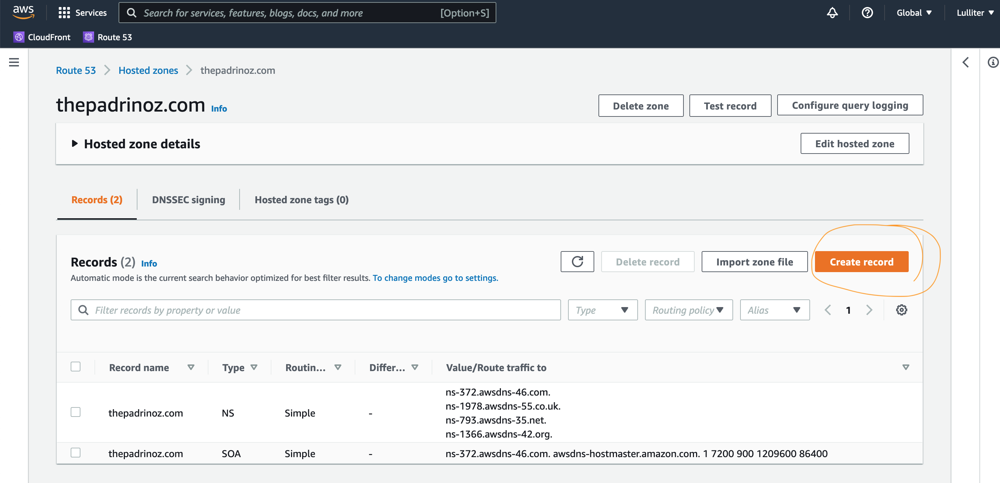

git clone https://github.com/Lulliter/example.gitCustom domain on AWS
The following steps help when setting up a new website that is hosted on GitHub Pages. Then, since GitHub Pages supports using custom domains, there are the instructions to re-direct tje site’s URL from the default <user>.github.io/domain to a custom domain name registered on AWS. Since GitHub Pages supports using custom domains, there are the instructions to re-direct the site’s URL from the default <user>.github.io/domain to a custom domain name registered on AWS.
Assuming you have:
- An AWS account
- A GITHUB account
- A website (distill/blogdown/quarto) in a GH repo that is being already deployed using GH PAGES on a domain like gh_user.github.io/domain_name/ (in my case
https://lulliter.github.io/domain_name/)
KEY AWS INFO: Domain & Hosted ZOne
Amazon Route 53– used to register domains and to define where you want to route internet traffic for your domain. We explain how to createRoute 53 alias recordsthat route traffic for your domain (example.com) and subdomain (www.example.com) to an Amazon S3 bucket that contains an HTML file.Amazon S3– used to create buckets, upload a sample website page, configure permissions so that everyone can see the content, and then configure the buckets for website hosting.
INSTRUCTIONS for website {Github Pages + AWS}
[on GitHub]: initiate a repo in the usual way
- Create a new repo on GitHub
- Go on local PARENT directory of the intended repo
- Execute
- on Local/GitHub: deploy website via Github Pages
- add content
- git add/commit/push (or see my
./_render-deploy.sh)
- Configure the Repo to publish on
https://lulliter.github.io/example/by going to Settings –> Pages –>
- make sure to have a
./docsfolder and indicate to GH that you will deploy from it - and to create a
.nojekyllfile for GitHub pages to work with a quarto website!
- on local: CNAME Looking forward, we will need to have a file named
CNAMEthat contains a single row: your custom domain (in this case:thepadrinoz.com)
Warning
❗ Before adding/committing to repo CNAME, at every push, the custom domain gets decoupled from GH Pages settings ….
[on AWS] Buy a domain
on AWS: Go to Route53, under ‘register domain’ then follow instructions to buy a domain (usually 10$/12$ per year). e.g.
example.com-
on AWS Route53: domain registration should be done automatically
- first, it will appear under DOMAINS –> Pending Requests [a verification email will be sent by AWS]
- after it will be under DOMAINS –> Registered Domains
I had already bought some DOMAIN from Amazon… + lulliter.com + R4biostats.com
[on AWS] set up a “HOSTED ZONE”
I see “HostedZone created by Route53 Registrar”
NOTE: If AWS did not automatically create a hosted zone upon buying the domain name, create one.
Tip
So for example if you bought the domain name username.com, you create the hosted zone name username.com. Once created open it up. Once you have created the hosted zone, open it up, click the Type NS, and copy the values on the right (4x url’s to awsdns addresses). Then go to the registered domains from the left menu, and in the Name Servers section on the right, click Add or edit name servers, delete any contents in there, and add the 4x lines you just copied one by one. This gives your domain name the address to the hosted zone.
[on AWS]: Redirect the domain to my website on Github pages
Note
Following
Log into AWS Console –> Route53
In your Route53 dashboard, click hosted zones

-
Click on the hyperlinked name of the domain you would like to use so it can open its specific page. Without doing nothing I already see:
-
example.com— Type NS — … -
example.com— Type SOA — …
-

-
Click Create Record A (This will be your
example.comrule)- Do not enter anything into the
Namefield - Under the
Typedropdown, select A — IPv4 addresses - The
Aliastoggle should be UNSELECTED - Enter the following four IP addresses into the value text area.
- Do not enter anything into the
185.199.108.153
185.199.109.153
185.199.110.153
185.199.111.153- Then click
Save Record Set“Create Record” .
[on AWS]: Configuring a subdomain www.example.com
-
Create another A type of record set (your
www.example.comrule, aka an alias forexample.com)- Into the
Namefield, enter ‘www’ - Under the
Typedropdown, select A — IPv4 addresses, again - SELECT
Aliason the dashboard, from dropdown menu, choose “Alias to another record in this hosted zone” and thenwww.example.com.(it has the full stop!!) - Then click
Save Record SetCreate Record.
- Into the

Note
In GH Pages, when you write under "Custom domain" the new name of your vanity example.com domain something will happen. If you are publishing your site from a branch (e.g. master branch / ./docs), this will create a commit that adds a CNAME file directly to the root of your source branch.
💡 SO next time you push from local it will tell that your branch is ahead or something an you must do some form of git pull
# praticamente pull da remoto + insieme merge ai cambiamenti locali
git config pull.rebase false-
Last, go back to GitHub repository’s settings tab
- Scroll down to the GitHub
Pagessection - In the
Custom domainfield enter your custom domain:example.com - Click Save
- Check
Enforce HTTPS
- Scroll down to the GitHub
[on local]: Adjust the .yml file of your website
Lastest 😥, go to “_site.yml” and replace base_url
## e.g. in quarto.yml
website:
title: "The example KOOL stuff"
site-url: https://example.comEXTRA STEP on GH Pages 🤔
[on GH Pages]: fix GHPages error
GH Pages is asking me to point www.domain.com to a CNAME record (instead of an A record)